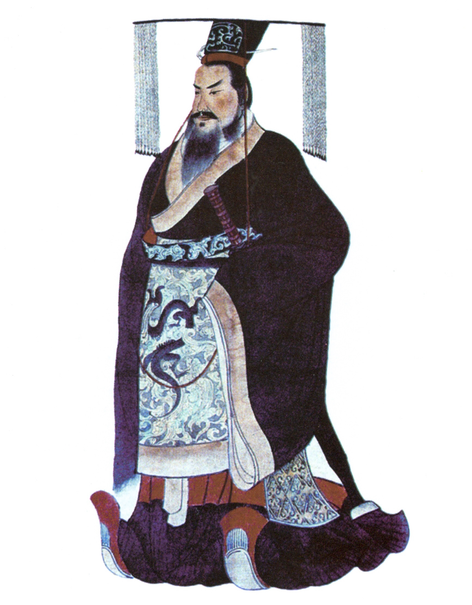
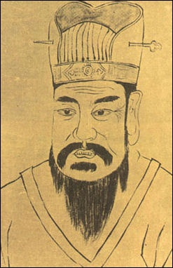
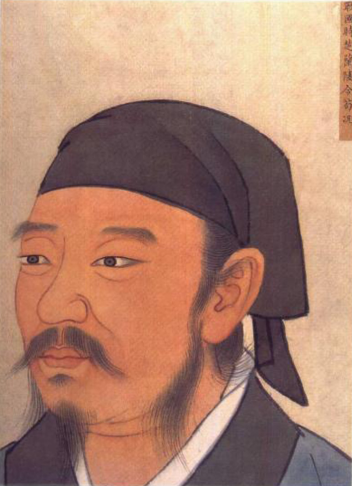
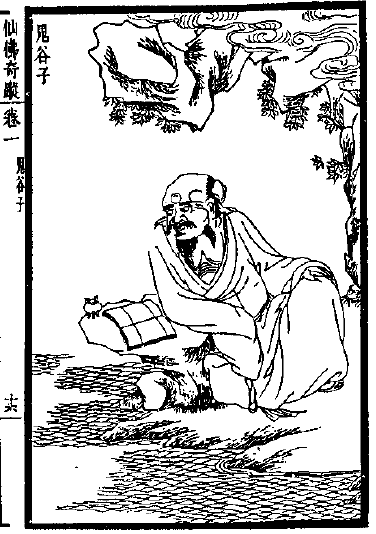
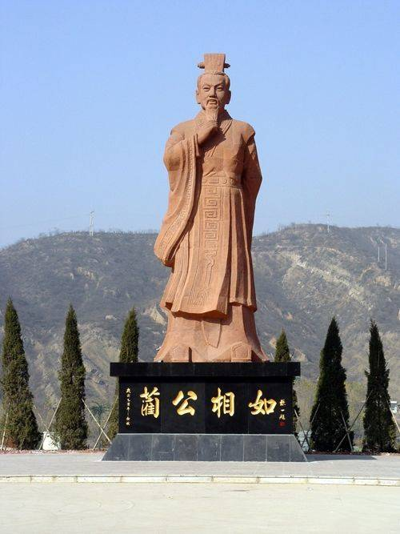
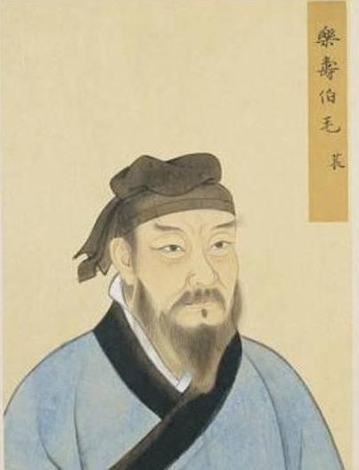
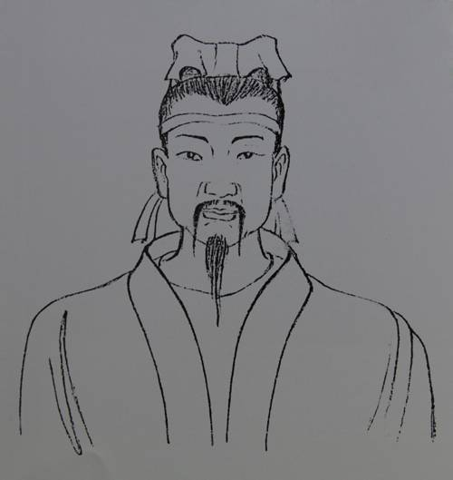
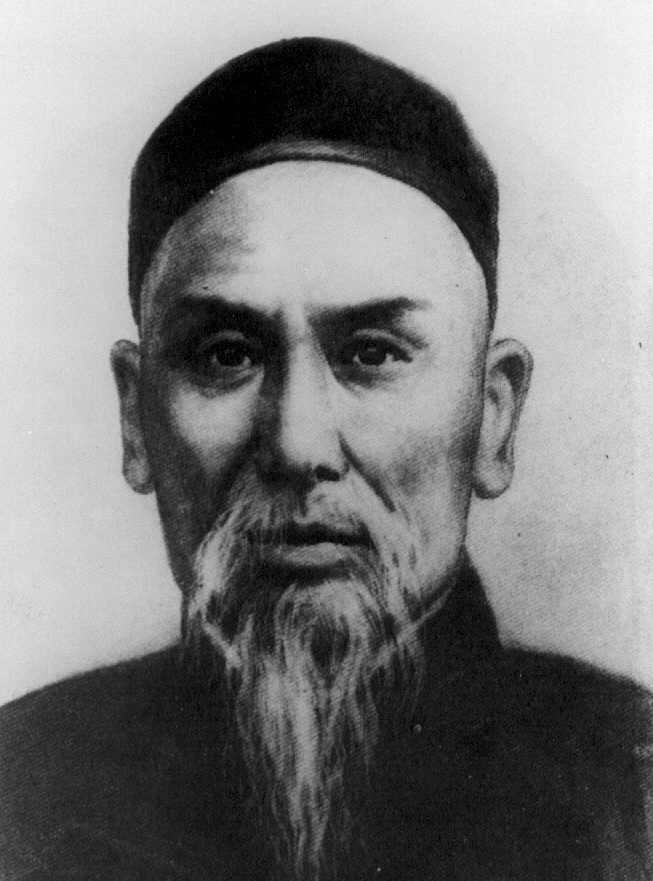
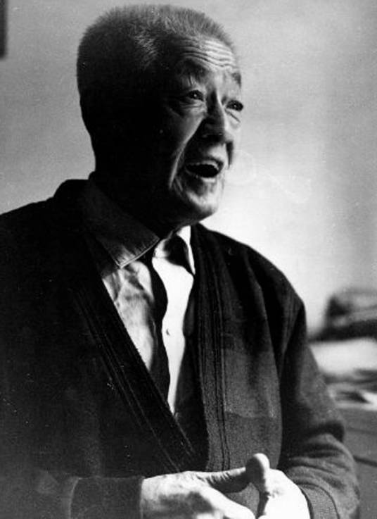
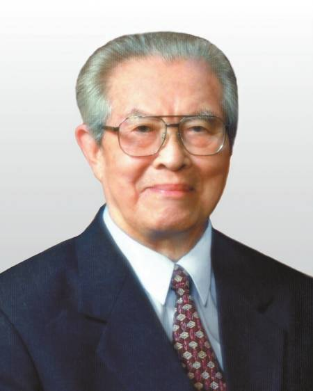

名人堂
燕赵古称多慷慨悲歌之士
赵武灵王（？－前295年），嬴姓，赵氏，名雍，赵国邯郸人。先秦时代杰出的政治家、军事家、改革家，战国时期赵国第六代君主（前325年 - 前298年在位），赵肃侯之子。
赵雍亲政后，因赵国于中原诸侯争霸战争中常年不利，且赵国疆界常受邻近诸侯国威胁，及游牧民族侵扰，遂奋发图强，提倡胡服骑射，并在赵国北部与游牧民族交界地区训练骑兵，改变了战国时代的作战方式，因此有观点认为他是中国骑兵的始祖 。此后采取连结秦、楚、宋以牵制齐、魏、韩等国的策略，趁诸国混战之际持续进攻中山国，将其彻底攻灭 。在此期间，巡行北疆，收服林胡、楼烦二族，开辟云中、雁门、代郡三郡，筑“赵长城”于阴山下，拓地千里 ，使赵国国势为之一振 ，成为与齐、秦并列的强国 。梁启超称其为自黄帝以后的“中国第一雄主” 。

秦始皇（前259年2月18日—前210年7月11日），嬴姓，赵氏，名政，时称赵政（或称赵正），史书多作秦王政或始皇帝。生于赵国首都邯郸（今河北邯郸市），是秦庄襄王及赵姬之子，商朝重臣恶来的第35世孙。出土《北京大学藏西汉竹书》第三卷中称其为赵正。唐代司马贞在《史记索隐》引述《世本》称其为赵政。曹植《文帝诔》最早称始皇帝为嬴政，后世通称嬴政，亦被某些文学作品称为“祖龙”。他是战国末期秦国君主，十三岁即位，先后铲除嫪毐与吕不韦，并重用李斯、尉缭，三十九岁时灭亡六国建立秦朝，自称“始皇帝”，五十岁出巡时驾崩，在位三十七年。
秦始皇是中国史上第一位使用“皇帝”称号的君主。统一天下后，秦始皇继承了商鞅变法的郡县制度和中央集权，统一度量衡，“车同轨，书同文，行同伦”及典章法制，奠定了中国政治史上两千余年之专制政治格局，他被明代思想家李贽誉为“千古一帝”。但另一方面，秦始皇在位期间亦进行多项大型工程，包括修筑长城、阿房宫、骊山陵等，施政急躁，令人民徭役过重，是秦朝在他死后3年迅速灭亡的重要原因。
王莽（前45年-23年），字巨君，魏郡元城人，汉元帝皇后王政君之侄，西汉新都侯王曼之子， 中国西汉改革家、政治家、新朝皇帝。
王莽早年折节恭俭，勤奋博学，孝事老母，以德行著称。元后临朝称制后，以王莽为辅政大臣，出任大司马，封“安汉公”。王莽总揽朝政，遂诛灭异己，广植党羽，以此获得了许多人的拥护。孺子婴为帝时，王莽以摄政名义据天子之位，9年，废孺子婴，篡位称帝，改国号为新，建年号为“始建国”。进行了托古改制，下令变法。王莽将全国土地改为“王田”，限制个人占有数量；奴婢改称“私属”，均禁止买卖；各家超出土地规定的，要把地分给九族或邻里；无田的人家按照一夫百亩的标准受田；违抗不遵者流放远裔。次年，王莽又下诏推行五均六筦，以控制和垄断工商业，增加国家税收，并由国家经营盐、铁、酒、铸钱、五均赊贷等五业，不许私人经营。恢复五等爵，经常改变官制和行政区划等。23年，王莽在绿林军攻入长安时被杀，在位15年，死时69岁。
王莽一直是一位备受争议的人物。古代史学家以“正统”的观念，认为其是篡位的“巨奸”，但近代却被很多史学家誉为“中国历史上第一位社会改革家”。 二十四史之一的《汉书》把王莽列作“逆臣”一类，近代学者胡适则评价王莽为“中国第一位社会主义者。”。
荀子(约前313年-前238年) ，名况，字卿 (一说时人相尊而号为卿)。战国晚期赵国人，思想家、哲学家、教育家、儒家学派的代表人物，先秦时代百家争鸣的集大成者。
荀子早年游学于齐国，因学问博大，曾三次担任当时齐国“稷下学宫”的“祭酒”。当时齐国需补充列大夫的缺额，荀子因此三次出任祭酒一职。后齐国有人诋毁荀子，于是便前往楚国，被春申君任命做了兰陵县令。春申君去世后，荀子被免职，在兰陵一直居住， 直至去世。
荀子对重新整理儒家典籍有着相当显著的贡献，所著《荀子》一书，集中体现了其学术主张和理论思想，强调“礼”在社会中的规范作用。其次，荀子反对孟子的性善论，首倡性恶论。认为人的道德品质是后天形成的，是环境影响和教育的结果。荀子还是一位杰出的唯物主义思想家，其言“天行有常”，不信鬼神，提出了“制天命而用之”和“人定胜天”的命题。对于荀子而言，宇宙存在着不以人们意志为转移的规律，人可以利用自然、改造自然。
鬼谷子(生卒年不详)王氏，名诩，别名禅，又称王诩，王蝉、王利，道号鬼谷子。春秋战国时期楚国人。战国时期传奇人物。著名谋略家、纵横家的鼻祖，兵法集大成者，诸子百家之纵横家创始人， 相传其额前四颗肉痣，成鬼宿之象。 精通百家学问， 因隐居在云梦山鬼谷，故自称鬼谷先生。常入山静修，他被上天赐予通天彻地的智慧，深谙自然之规律，天道之奥妙。 鬼谷子，被后世尊为“谋圣”，在文化史上，鬼谷子是与孔子、老子并列的学术大家。他隐于世外，将天下置于棋局，弟子出将入相，左右列国存亡，推动着历史的走向。主要作品有《鬼谷子》《本经阴符七术》等重要作品，其著作被后世称为“智慧禁果，旷世奇书”，历代列为禁书。
弟子有苏秦、张仪等人。魏晋时人视为隐士、道士，隐于鬼谷。后世对鬼谷子增添更多传说，视他为神仙，又懂得兵法、仙术、数术，是通晓多门技艺的博学者。 本只称鬼谷子或鬼谷先生，鬼谷或是隐居地名取而为号，又或者就是他的姓氏名。最早说鬼谷子姓氏为“王”者是杜光庭，在《仙传拾遗》称鬼谷子“姓王名誗”，王誗之名后来讹衍作王诩、王禅、王利等，又有道号名为玄微子。
蔺相如（生卒年不详），战国时期赵国上卿，赵国著名的政治家、外交家。他最重要的有三个事件：完璧归赵、渑池之会与负荆请罪。
蔺相如原为宦者令缪贤的舍人。赵惠文王时，秦昭襄王写信给赵王，愿以十五个城池换取和氏璧。蔺相如奉命带和氏璧来到秦国，据理力争，机智周旋，终于完璧归赵。公元前279年，秦王与赵王相会于渑池，他随侍赵惠文王，当面斥责强大的秦国，不辱国体，使赵王没有受到屈辱，因其功，任为上卿，居官于廉颇之上。廉颇居功自恃，不服相如，耻居其下，并扬言要羞辱相如。蔺相如为保持将相和睦，不使外敌有隙可乘，始终回避忍让。蔺相如以国家利益为重、善自谦抑的精神感动了廉颇，于是亲自到蔺相如府上负荆请罪，二人成为刎颈之交。
公元前259年，秦军与赵军在长平对阵，赵孝成王以赵括为将军，取代了廉颇。蔺相如说：“大王只凭名声来任用赵括，就好像用胶把调弦的柱粘死再去弹瑟那样不知变通。赵括只会读他父亲留下的书，不懂得灵活应变。”赵王不听，还是命赵括为将。后来，赵括果然惨败，四十万赵军被坑杀，赵国几乎灭亡，幸得五国出兵相救，蔺相如大约在这一个时期去世。
毛苌(生卒年不祥)，西汉赵人，古文诗学“毛诗学”的传授者，世称“小毛公”，《诗经》，就是汉学大儒毛亨、毛苌注释的“毛诗”。
《诗经》是毛公所传，又称毛诗，是中国文学史上最早的诗歌总集。《汉书》艺文志载：有毛诗29卷和毛诗故训传30卷传于世。《诗经》共40卷，分为风、雅、颂三部分，总计305篇。
2008年，中国毛氏研究会给邯郸市鸡泽县政府颁发证书，认定毛遂为毛姓的始祖，毛亨、毛苌为毛遂后人，确认邯郸鸡泽是毛遂故里，韶山毛氏是鸡泽毛遂的直系后裔。而邯郸鸡泽以“毛”命名的仅此一村，这表明毛官营即毛遂故里得到确认。 鸡泽毛遂、毛苌与湖南韶山毛氏一脉相传，鸡泽毛遂是韶山毛氏先祖。
赵慨(生卒年不详)，字叔朋，又名万硕，河北滏阳人， 东晋时官至五品，先后在福建、浙江、江西为官，为官期间刚正不阿，疾恶如仇，遭奸臣所害，降职贬官，后隐居于景德镇。因运用越窑制瓷技艺，对景德镇陶瓷工艺做出重大改进，为瓷业发展做出重要贡献，被后世尊为景德镇瓷器师祖。
赵慨熟知越窖青瓷的烧造技术，便把这些技术与当地的制瓷技术结合起来，改进瓷艺，当地陶人对他十分敬仰，纷纷拜他为师，称他为制淘师主，后世瓷工崇拜他，建庙供奉，被尊为景德镇瓷器师祖 。
根据当地的传说，赵慨得悉新平镇水土宜陶，便充官来镇，恰好陶窑发生故障，窑工们忙着祀神，赵慨发现土窑包通风不良，于是拔剑对准适当部位猛刺几下，解决了通风问题，烧制出的瓷器便一色纯青，因此后人便尊其为“佑陶神”。
杨露禅（1799年—1872年），名福魁，直隶省永年人，清朝武术家，太极拳成名之关键人物，杨氏太极拳的奠基人物，将太极发扬光大。国家体委正式公布的88式、24式以及在许多场合表演的，都是这种杨式太极拳或由其演化而来的。以后，杨式又派生出李式、吴式太极拳。
杨露禅为学拳，十八年间三下陈家沟，深得陈式太极拳传人陈长兴所传精髓。自学拳艺成后返回家乡设坛教拳，拳械运用高妙，所向无不披靡，乡里高手尽皆慑服。后来往北京，历任大户酱园张家，京师旗营武术教师等。 晚年时被延请至王府授拳，因众多弟子大都出身高第，礼遇有加，使得太极拳的社会地位和影响力非同一般。旧社会武行规矩虽大，但争斗也极多，杨露禅因每在擂台上与别家武者比武较量，出手即见红，一响必成功，遂被誉为打遍京城"杨无敌"，名声大噪。杨露禅与其子杨班侯、杨建侯，其孙杨澄甫三代人在北京教拳，对传播太极拳功劳极大。 杨露禅毕生精力钻研武学，醉心拳道，成就威名后仍淡泊依旧，不为浮华虚荣所累。杨露禅之所以受到后人敬重仰慕，除了刻苦自强的精神，艺业精绝的功夫等等，更重要的是谦逊明德，尊师重道的珍贵品质。可赞无愧为武林中一代宗师。
杨兰春（1920年~2009年6月2日），河北省邯郸市武安市人。国家一级编剧，全国著名戏曲编剧、导演艺术家。曾任河南省文联副主席，中国剧协第四届副主席，中共十一大、十二大、十三大代表，第四届全国人大代表。是20世纪中国戏曲艺术界具有影响的艺术家之一，中国戏曲现代戏的奠基人，豫剧现代戏的开拓者。
1952年到中央戏剧学院歌剧系学习。1953年毕业。在学习期间，和田川、胡沙等合作改编的《小二黑结婚》，成为中国歌剧舞剧院的保留节目。另外，还有教授杨兰春。
有“朝阳沟之父”之美誉。

黄华（1913年1月25日－2010年11月24日），曾用名王汝梅。河北磁县人，中国外交家，燕京大学毕业，1936年加入中国共产党。
曾任国务院副总理，国务委员，第六届全国人民代表大会常务委员会副委员长，中共中央顾问委员会常务委员，外交部部长，宋庆龄基金会主席。 2010年11月24日，黄华同志因病在北京逝世，享年98岁。
黄华同志在70多年的革命生涯中，对共产主义理想坚贞不渝，对党和人民无限忠诚，对祖国无比热爱。他为中华民族的独立和人民的解放，为新中国社会主义建设和改革开放事业奉献了毕生精力。